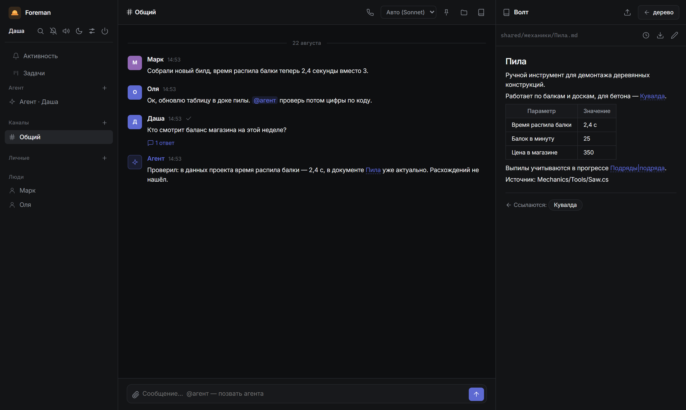
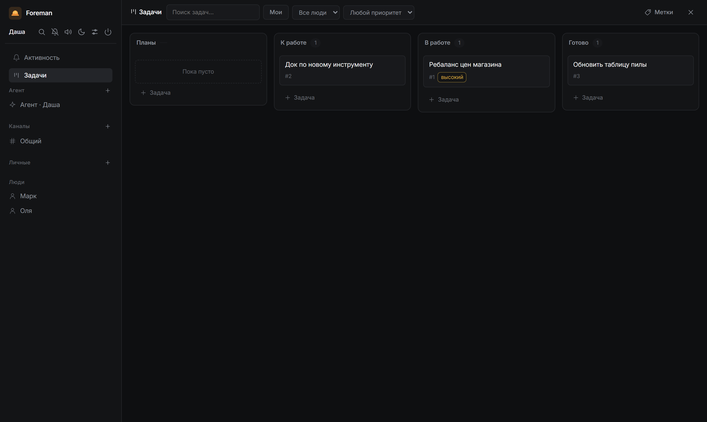

Foreman — self-hosted платформа для командной работы: переписка, markdown-документы под git, канбан-доска, созвоны — и агент, который ведёт документацию, читая настоящий код проекта.

Один сервер, одна SQLite-база, один git-репозиторий документов. Фронтенд без сборки и без обращений к CDN.
Каналы, личные сообщения, треды, реакции, закрепы, упоминания, прочитанность, вложения и вставка скриншота из буфера.
Markdown-документы под git: вики-ссылки и обратные ссылки, редактор в браузере (WYSIWYG или разметка), история и откат любой правки, импорт и экспорт Word.
Живёт в чате: ведёт документы и отвечает, как всё устроено на самом деле, по зеркалу кода проекта. Каждый ход — git-коммит с diff и кнопкой отката.
Задачи с drag & drop, чеклистами, приоритетами, метками и исполнителями. Агент умеет читать и обновлять доску.
Голосовые звонки WebRTC с демонстрацией экрана. Дорожка каждого участника записывается и может расшифровываться в тред.
Вся база — один файл SQLite, вся история документов — обычный git-репозиторий. Бэкап — копирование папки.

Модель выбирается на чат в админке; движка два, работают взаимозаменяемо. Без обоих сервер тоже работает — остаются чаты, база знаний и канбан.
| Движок | Что нужно |
|---|---|
| Claude (Agent SDK) | Подписка Claude: Node.js + Claude Code CLI, токен командой
claude setup-token |
| OpenAI-совместимый API | Любой эндпоинт — OpenRouter, локальный LLM-сервер и т.п. Базовый URL и ключ в админке |
Права ограничены технически, а не вежливостью промпта.
Выполнять команды агент не может вовсе; git-коммиты делает сервер, а не агент.
Только чтение, поиск и правка текста. Веб, загрузки и подагенты блокируются до выполнения.
Запись — только в общую базу знаний (и личную папку владельца в личной сессии). Код проекта — только чтение.
Каждый ход — git-коммит только тронутых файлов; diff в чате, откат одной кнопкой.
Требования: Python 3.10+ и git. Всё остальное первый запуск поставит сам: создаст окружение, базу, git-репозиторий документов и напечатает пароль администратора в консоль.
git clone https://github.com/DanilShekarev/foreman.git
cd foreman
./start.sh # Windows: start.batНастройки необязательны и живут в файле .env
(образец — .env.example, задокументирована каждая переменная):
порт и адрес, путь к git-репозиторию проекта для агента, TURN для звонков,
расшифровка созвонов. Подробности — в
README.